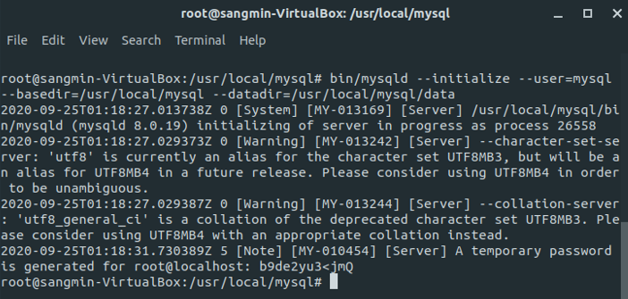
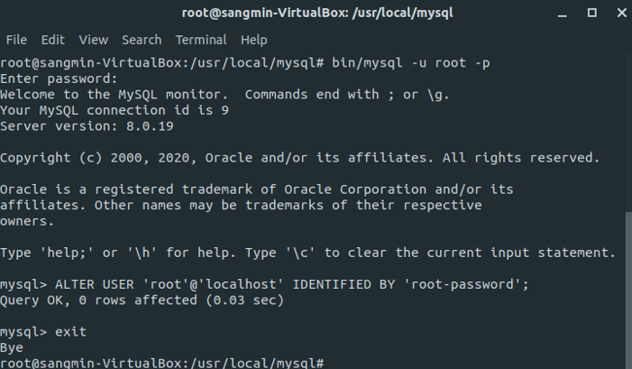

MySQL 8.0.19 컴파일 설치
Ubuntu 18.04 위에 Apache 2.4.46 설치를 완료했다. (이전 내용)
MySQL은 버전 8.0.19 를 컴파일 설치했는데 시간이 정말 많이 걸려서 놀랐다. 심지어 도중에 한 번 우분투 복구까지 진행했다. 스냅샷을 찍어 백업시켜둔 과거의 나한테 고마웠다. 덕분에 apt-get upgrade하는데 굉장히 많은 시간이 걸렸지만…
의존성 패키지 설치
MySQL 공식 문서에 꼭 설치해야 하는 패키지들이 명시되어 있다. apt-get update 후 필요한 패키지들을 설치하면 된다.
MySQL Community Server 8.0.19 설치
Apache 설치할 때와 동일하게 tar.gz파일을 다운받아 압축 해제해준다.
$ cd /usr/local
$ wget https://dev.mysql.com/get/Downloads/MySQL-8.0/mysql-8.0.19.tar.gz
$ tar xvfz mysql-8.0.19.tar.gz
MySQL 설치
- cmake : 설치 옵션 부여
- make :
build - make install : 설치 진행
$ cd /usr/local/mysql-8.0.19
$ mkdir <DIRNAME>
$ cd <DIRNAME>
$ cmake .. \
-DCMAKE_INSTALL_PREFIX=/usr/local/mysql \
-DMYSQL_DATADIR=/usr/local/mysql/data \
-DMYSQL_UNIX_ADDR=/usr/local/mysql/mysql.sock \
-DMYSQL_TCP_PORT=3306 \
-DDEFAULT_CHARSET=utf8 \
-DDEFAULT_COLLATION=utf8_general_ci \
-DSYSCONFDIR=/etc \
-DWITH_EXTRA_CHARSETS=all \
-DWITH_INNOBASE_STORAGE_ENGINE=1 \
-DWITH_ARCHIVE_STORAGE_ENGINE=1 \
-DWITH_BLACKHOLE_STORAGE_ENGINE=1 \
-DDOWNLOAD_BOOST=1 \
-DWITH_BOOST=/usr/local/mysql/boost
$ make && make test && make install
make하는 과정이 굉장히 길다. 사실 Apache를 단숨에 깔고나서 첫 과제는 쉽게 깔기만 하면 되네 하고 생각했었으나 큰 오산이었다. 심지어 앞에서 말했듯이 make 과정을 두 번씩이나 거쳤으니 말 다했다.
MySQL 데이터베이스 초기화
mysql 그룹 및 유저 생성
$ groupadd mysql
$ useradd -r -g mysql -s /bin/false mysql
mysql-files 디렉토리 생성
$ cd /usr/local/mysql
$ mkdir mysql-files
권한 설정
- chown : change own, 파일의 소유권자 변경
- chmod : change mode, 파일과 디렉토리의 사용 권한 변경
$ chown -R mysql:mysql /usr/local/mysql
$ chown mysql:mysql mysql-files
$ chmod 750 mysql-files
기본 데이터베이스 설정
$ bin/mysqld --initialize --user=mysql \
--basedir=/usr/local/mysql \
--datadir=/usr/local/mysql/data
우분투를 복원시키게 된 지점이 바로 여기이다. bin/mysqld 명령어를 입력하는데 bin 디렉토리가 없어서 한참 헤맸다. find 명령어를 통해 모든 우분투 내 모든 bin 디렉토리를 찾으며 그 속에 mysqld가 있나 확인했다.
어찌저찌 찾아 다행이란 마음으로 복사해 왔는데 아니나 다를까 실패했다. 실패하고 또 실패하고 계속 실패하다가 그냥 초기 상태로 복원하고 Apache부터 다시 깔았다. 성공하면 아래 사진처럼 임시 비밀번호를 발급해준다. 서버 연결 후 바꿔야하니 기억해두도록 하자.

비밀번호 초기화
mysql 서버 실행
- mysqld_safe : mysql 실행
$ bin/mysqld_safe --user=mysql &
& 명령어를 통해 백그라운드에서 프로세스를 실행시켜준다.
서버 연결 및 종료
$ bin/mysql -u root -p
발급받은 임시 비밀번호를 입력하면 쉘 화면이 mysql>로 바뀐다. 아래의 명령어를 통해 root 비밀번호를 변경할 수 있다. root-password 부분은 사용자가 원하는대로 변경 가능하다.
mysql> ALTER USER 'root'@'localhost' IDENTIFIED BY 'root-password';
서버는 shutdown 명령어를 이용하면 종료된다.
$ bin/mysqladmin -u root -p shutdown
MySQL 설치 완료

글을 쓰는 현 시점의 나는 PHP까지 모두 컴파일 설치를 완료했지만 몇 시간 전까지만 하더라도 우분투와 씨름하고 있었다. 물론 설치를 기다리는 과정이 길었던 탓도 있지만 간만에 새벽까지 달려들어 집중했던 것 같다.